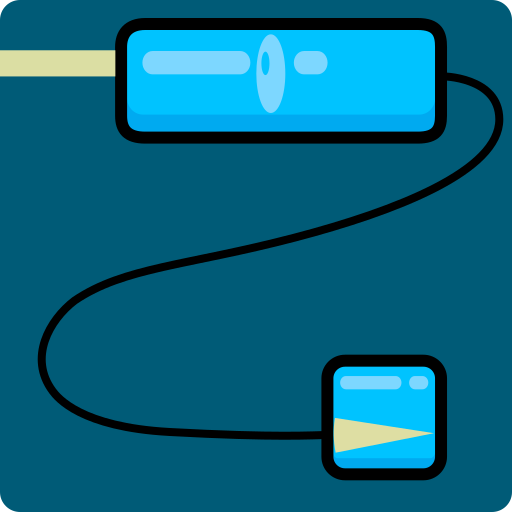
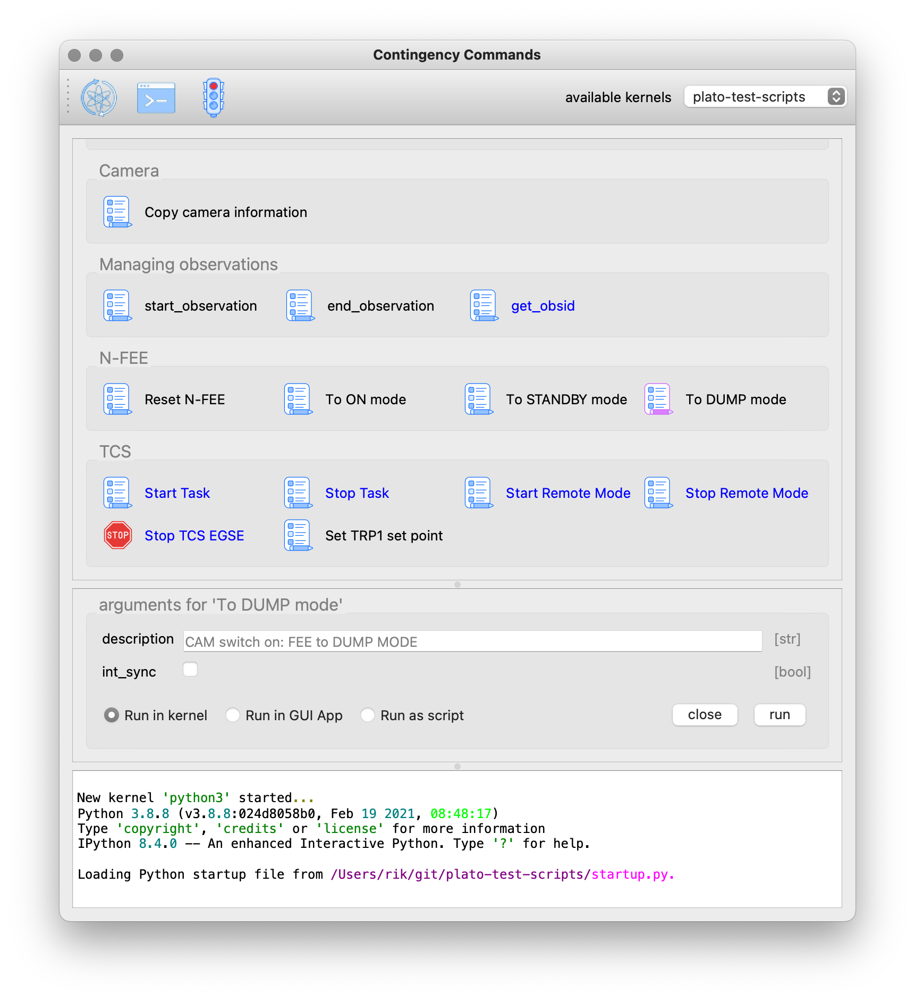

Changelog
- XX/06/2023 — v0.2
-
-
added a section on the DPU GUI application, see Section 4.6
-
removed section on contingency GUI since those tasks are now integrated in each of the TH GUIs using shared tasks
-
added a backlink to the CGSE Documentation web site for your convenience. It’s at the top of the HTML page.
-
- 04/05/2023 — v0.1
-
-
Introduce Changelog, this section
-
Added an explanation how to execute tasks in the Jupyter Console, see Section 5.6.
-
Abstract
This document is the user manual for the PLATO Common-EGSE and Test Script. The software is used at CSL and the test houses at IAS, INTA and SRON. The document describes all user interactions with the different components of the Common-EGSE system and how to run the different test scripts to perform camera testing. The focus in this document is on how to work with the system, not on which tasks and commands you will have to execute to perform a test. The latter is described in full detail in the Ground Tests Commanding Manual.
This manual assumes the system has been installed and is properly configured and will therefore not explain configuration settings nor installation procedures. Please refer to the installation manual for this information.
The Common-EGSE framework and the Test Scripts are part of the PLATO Camera Alignment and Testing program. The software is developed in-house in the Python 3 programming language and runs on the Linux OS. The Common-EGSE is a distributed system with (micro-)services and controllers for hardware devices that make up the ground test equipment. Camera testing is performed by executing test scripts in a Python 3.8+ environment following the as-run test procedures.
TODO
What can be a good structure for this manual? I was thinking about make chapters per topics and not so much per component. Something like:
Starting up Starting the core egse services The Process Manager Monitoring the system Using device GUIs Using Grafana Running test scripts The as-run procedure Using PyCharm or the test house GUIs Inspecting the data Location of housekeeping and image data
-
Try to go through it with a user hat on — what is a user? operator/developer/sysadmin?
-
installation procedure: be clear about it, which installation is for the normal users/developers/sysadmins?
-
using modules or .bash_profile to set up the environment?
-
-
Inspection of the Settings & local settings
-
python -m egse.settings
-
python -m egse.setup --use-cm
-
GUI ?
-
-
starting the different core services:
-
core services: invoke start-core-egse for users & developers? Systemd for sysadmins
-
how to check if these core services have been started and are working properly?
-
invoke status-core-egse or status for individual core services, e.g. log_cs status
-
cm_cs status
-
-
-
-
What about the GUIs of the core services?
-
log_cs has no GUI yet→ yes it does, cutelog and Textualog
-
sm_cs has no GUI yet
-
cm_cs has a GUI cm_ui ⟶ can not start when cm_cs is not running
-
-
dpu_cs
-
should be able to run as a daemon server, be able to connect/reconnect to N-FEE when needed/requested
-
start it in the background?
-
-
What shall go into the UM and what in the DM?
-
Installation for the user:
-
git clone from the IvS-KULeuven repo
-
python setup.py develop -
python -m pip install -e .
-
-
What is the focus of the user with respect to CGSE?
-
GUIs
-
-
Status Overview of the System
-
How can we see what is running/active/ready…
-
commandline
-
GUIs
-
-
-
Explain Grafana dashboards
Documents and Acronyms
Applicable documents
| [AD-01] |
PLATO Common-EGSE Requirements Specification, PLATO-KUL-PL-RS-0001, issue 1.4, 18/03/2020 |
| [AD-02] |
PLATO Common-EGSE Design Description, PLATO-KUL-PL-DD-0001, issue 1.2, 13/03/2020 |
| [AD-03] |
PLATO Common-EGSE Interface Control Document, PLATO-KUL-PL-ICD-0002, issue 0.1, 19/03/2020 |
Reference Documents
| [RD-01] |
PLATO Common-EGSE Installation Guide, PLATO-KUL-PL-MAN-0002 |
| [RD-02] |
PLATO Common-EGSE Developer Manual, PLATO-KUL-PL-MAN-0003 |
| [RD-03] |
Common-EGSE on-line Documentation https://ivs-kuleuven.github.io/plato-cgse-docs/ |
Acronyms
AEU |
Ancillary Electronics Unit |
API |
Application Programming Interface |
CAM |
Camera |
CGSE |
Common-EGSE |
CSL |
Centre Spatial de Liège |
COT |
Commercial off-the-shelf |
CTI |
Charge Transfer Inefficiency |
DPU |
Data Processing Unit |
DSI |
Diagnostic SpaceWire Interface |
EGSE |
Electrical Ground Support Equipment |
EOL |
End Of Life |
FEE |
Front End Electronics |
FPA |
Focal Plane Assembly/Array |
GSE |
Ground Support Equipment |
HK |
Housekeeping |
IAS |
Institut d’Astrophysique Spatiale |
ICD |
Interface Control Document |
LDO |
Leonardo space, Italy |
MGSE |
Mechanical Ground Support Equipment |
MMI |
Man-Machine Interface |
NCR |
Non-Conformance Report |
NRB |
Non-Conformance Review Board |
OGSE |
Optical Ground Support Equipment |
OS |
Operating System |
PID |
Process Identifier |
PPID |
Parent Process Identifier |
PLM |
Payload Module |
PVS |
Procedure Variation Sheet |
REPL |
Read-Evaluate-Print Loop, e.g. the Python interpreter prompt |
RMAP |
Remote Memory Access Protocol |
SFT |
Short Functional Test |
SpW |
SpaceWire |
SRON |
Stichting Ruimte-Onderzoek Nederland |
SUT |
System Under Test |
SVM |
Service Module |
TBC |
To Be Confirmed |
TBD |
To Be Decided or To Be Defined |
TBW |
To Be Written |
TC |
Telecommand |
TCS |
Thermal Control System |
TH |
Test House |
TM |
Telemetry |
TOU |
Telescope Optical Unit |
TS |
Test Scripts |
TV |
Thermal Vacuum |
USB |
Universal Serial Bus |
1. Introduction
The Common-EGSE consists of several components, each with specific responsibilities, that communicate over a ZeroMQ messaging network protocol. The core functionality of the CGSE are what we call core services:
-
Configuration Manager: manages and keeps track of the configuration of the test Setup and test equipment.
-
Storage Manager: manages and stores all camera test data, i.e. CCD images, housekeeping data, monitoring data.
-
Process Manager: manages and keeps track of all running processes that are used by the test site.
-
Synoptics Manager: manages the synoptic housekeeping
-
Logging Manager: stores and distributes all logging messages from all components in the system
The core services are independent of the test house or test equipment that is used and are background processes that are started by the Linux Systemd service during startup of the CGSE server. No user interaction is need with the core services as they are managed by Systemd to restart when they crash or are stopped. You should be confident that the core services are always running.
1.1. The User Perspectives
Although this manual is intended for operators, i.e. those users that operate the system, perform the tests, and execute the procedures, some sections will be dedicated to administrators or developers when there is a need in the context of the section. Please note that this user manual is complementary to the PLATO Camera Ground Test Commanding Manual [PLATO-KUL-PL-MAN-0004] with only minimal overlap.
1.2. Where do I start?
Since we assume the Common-EGSE and Test Scripts have been installed and configured, the starting point for you is the Process Manager. The Process Manager (PM) provides a GUI which is started on the egse-client and looks much like the screenshot below. The PM GUI can be started either by clicking its icon on the desktop or from a terminal with the pm_ui command.
$ pm_ui
The Process Manager GUI represents the state of the system. It provides information about all the processes that are needed to perform the camera tests. These processes are divided in four categories: Core services, File Generation Processes, Non-Device Control Servers, and Device Control Servers. The screenshot below is taken from CSL and the GUI only shows processes that are applicable to CSL. The left column of services and processes are common for CSL and all the test houses. The right column with Device Control Servers is test house specific and is defined by the content of the Setup. [XXXXX explain what the Setup is and where more info can be found].
The red and green bullets in the PM GUI describe the state of the service or process. When the bullet is green the process is running as expected, when the bullet is red the process is not running. For some devices the bullet can become orange to indicate that the control server process is running, but the device is not connected and can therefore not be commanded. The icons at the right of the processes are for starting/stopping the process. Some processes can be started in simulator mode (toggle the device icon) and some of the processes have a GUI associated that can be started from the PM GUI. Please note that none of the core services can be started from the Process Manager GUI. Core services are managed by the Systemd services of your Linux system and when stopped or crashed they will be automatically restarted.
The Process Manager is fully explained in its own section The Process Manager GUI in Section 4.2.
The Process Manager presents you with a view of the state of the system and allows you to start and stop device processes and start some GUIs to manipulate certain devices and services. The main task for an operator to perform camera tests or alignment procedures is however to execute the test procedure as described in the TP-0011 Google Sheet for each of the test houses and in the ambient alignment procedure PR-0011 for CSL. These documents contain step-by-step as-run procedures that describe all manual interactions, tasks and code execution needed to successfully perform a camera test. Each of the rows in these procedures describe one action that needs to be successfully finished before proceeding to the next action. As said, this can be a manual interaction with a device, a task to be executed from a specific GUI, or a code snippet that needs to be executed in the dedicated environment. The Python source code from the as-run procedure will be executed in a Python Console that is used throughout the completion of the as-run procedure.
We recommend to use the Python Console provided by the PyCharm IDE. [XXXXX What about the Qt Python Console that is available from the e.g. CSL Commanding GUI?]
1.3. Client vs. Server
Your server is a powerful machine with one or two CPUs and a few tens of cores. This was chosen because we will have a lot of applications/services running, and they can take up different cores without being interrupted. The server also has several disks that are used for active data storage and data archive. The active data storage needs to be a fast SSD disk with enough space to store the data of a few test days. The disk needs to be fast because of the image data that is received from the camera. When the image data is not written fast enough the camera front-end electronics might generate a buffer over-full error hereby corrupting the image data for the current exposure. The archive disk is a normal SATA disk that can hold the test data for the whole campaign.
The client machine is a small desktop computer with preferably two large screens to place all the GUIs and the browser for commanding and monitoring the tests.
1.3.1. What should run on the Server?
The following processes should run on the server:
-
The core services (Storage Manager, Configuration Manager, Process Manager, Synoptics Manager, and Logger), which are (re-)started automatically via
systemd; -
All control servers (incl. device control servers, FDIR, Alert Manager);
-
ALl file generation processes (FITS generation, FOV HK, and N-FEE HK).
These processes can be started in two different ways:
-
From the PM UI (see the Sect. below), which is running on the client;
-
Directly on the command line on the server.
1.3.2. What should run on the Client?
The following things should be started on the client:
-
The test scripts, executed in a Python interpreter (PyCharm or the Operator GUI)
-
All GUIs. These can be started from the command line or from the PM UI.
|
Note
|
All processes (not the GUIs) that are started from the PM UI are actually started on the server by the Process Manager. When you press a start button on the PM UI, you send a request to the Process Manager to start the service. Remember the Process Manager itself is running on the server. |
2. Update the Common-EGSE Software
update_cgse develop
To update the Common-EGSE on the operational machine, use the ops argument instead. An operational installation is different from a developer installation. There is no virtual environment and the all required Python packages, including the Common-EGSE are installed at a specific location. The installation process makes use of the following environment variables:
-
PLATO_COMMON_EGSE_PATH: the location of the plato-common-egse repository on your machine, e.g.,~/git/plato-common-egse -
PLATO_INSTALL_LOCATION: the location where the packages shall be installed, usually/cgse
update_cgse ops --tag=2022.2.2+CGSE
There should not be any changes to files in this location, otherwise an error will be shown and the process interrupted.
WHICH ERROR AND WHAT TO DO AFTERWARDS?
3. Starting the Core Services
The core services of the Common-EGSE are those services that should be running all the time and preferably on the dedicated EGSE server. In the production environment, i.e. when we are actually running the tests in the lab, these services will be started automatically when the system boots, see the section on the core services in systemd. During our development and when using the Common-EGSE outside of the Camera Test environment, we can start the core services on our local machine.
When the system is properly installed, you should have an invoke command available from the terminal. When you run it with the --list option, it will show which commands are available. Make sure you execute this command in the CGSE project folder.
$ cd ~/git/plato-common-egse $ invoke --list Available tasks: pytests Run the tests for this project. start-core-egse Start the CGSE core services. stop-core-egse Stop the CEGSE core services. status-core-egse Print the status information of the CGSE core services
Some of these commands are for development purposes, but the start-core-egse and the stop-core-egse commands can be used to start/stop the core services.
$ invoke start-core-egse Starting log manager.. Starting storage manager.. Starting configuration manager.. Starting process manager.. Starting synoptics manager..
The servers are started in a background job.[1] To see if they are indeed started, you can run the following in your terminal:
$ ps -ef|grep _cs 459800007 64147 1 0 2:25PM ttys001 0:00.42 /Library/Frameworks/Python.framework/Versions/3.8/Resources/Python.app/Contents/MacOS/Python /Users/rik/Git/plato-common-egse/venv38/bin/log_cs start 459800007 64148 1 0 2:25PM ttys001 0:02.73 /Library/Frameworks/Python.framework/Versions/3.8/Resources/Python.app/Contents/MacOS/Python /Users/rik/Git/plato-common-egse/venv38/bin/sm_cs start 459800007 64162 1 0 2:25PM ttys001 0:07.90 /Library/Frameworks/Python.framework/Versions/3.8/Resources/Python.app/Contents/MacOS/Python /Users/rik/Git/plato-common-egse/venv38/bin/cm_cs start 459800007 64171 1 0 2:25PM ttys001 0:03.14 /Library/Frameworks/Python.framework/Versions/3.8/Resources/Python.app/Contents/MacOS/Python /Users/rik/Git/plato-common-egse/venv38/bin/pm_cs start 459800007 64180 1 0 2:25PM ttys001 0:02.94 /Library/Frameworks/Python.framework/Versions/3.8/Resources/Python.app/Contents/MacOS/Python /Users/rik/Git/plato-common-egse/venv38/bin/syn_cs start
Keep the core services running, they do not harm and other components of the Common-EGSE need these services. But, if you want to stop them anyway at the end of a long working day, just use:
$ invoke stop-core-egse
4. The Graphical User Interfaces (GUI)
4.1. Icons used for different GUIs
| Component | icon | Command | Comment/description |
|---|---|---|---|
Process Manager GUI |
|
||
Configuration Manager GUI |
|
this logo is also usedfor the Setup GUI |
|
CSL Commanding GUI |
|
||
Contingency GUI |
|
|
|
PUNA Hexapod GUI |
|
this logo is also used for the Mechanical Positions GUI, used only on position 'M' in the CSL cleanrooms |
|
ZONDA Hexapod GUI |
|
||
Gimbal GUI |
|
||
HUBER Stages GUI |
|
||
OGSE GUI |
 |
|
only used at CSL |
TCS GUI |
|
|
only used in the test houses |
AEU GUI |
|
||
DPU GUI |
|
||
FITS Generation GUI |
|
||
FOV GUI |
|
||
Visited Positions GUI |
|
||
Power Meter GUI |
|
4.2. The Process Manager GUI
This section describes the Process Manager GUI.
4.3. The CSL Operator GUI
This section briefly describes the CSL specific task GUI, the CSL Operator GUI.
The intent of the CSL Operator GUI is to simplify the work of the test operator at CSL when executing routine tasks to perform the alignment of the PLATO Cameras. At the top of the GUI you will find the tasks for taking a single position measurement, a circle around the optical axis, and a Hartmann measurement. Each of these task groups has a task to do the actual commanding and a task to reduce and analyse the data. Then, there are tasks that are grouped by components like the PUNA Hexapod, the Camera, OGSE, etc. Each of these groups contain tasks to perform a specific action on that component. When you hover over the tasks with your mouse, the documentation for that task will show up in a tooltip. Alternatively, you can right click on a task and select View source… to inspect the source for for the task.

For more information on the working of the Task GUIs, please go and read the section on the Tasks GUI in Chapter 5.
4.4. The Hexapod Puna GUI
4.4.1. Monitoring and Commanding the Hexapod
Monitoring and commanding the hexapod can be done via a designated GUI. This is described in the sections below.
4.4.2. Synopsis
To start the Hexapod Puna GUI, type the following command:
puna_ui --type [simulator/proxy/direct]Arguments
The Hexapod GUI should be started with the following arguments:
--type-
The hexapod implementation you want to connect to. The options are
simulator,proxy, anddirect. Thesimulatoroption starts the GUI in simulation mode, which means that instead of connecting to the real hardware, the GUI communicates with a simulator. This option is mainly used for testing or demonstration when no hardware is available. Thedirectoption connects the GUI directly to the hardware controller without a control server in between. Theproxyoption is the default and connects the GUI to the Puna Control Server allowing other processes to connection simultaneously for monitoring. --profile-
Optional. Profile for logging.
4.4.3. Description
A screenshot of the Hexapod Puna GUI is shown below.

We discern the following components in the GUI:
-
the [toolbar](#toolbar),
-
the left panel, displaying the [status](#states) of the hexapod,
-
the middle panel, with the [user and machine positions, and actuator lengths](#positions),
-
and the right panel with the [tabs that allow settings, movements, maintenance, etc.](#tabs)
4.4.4. Toolbar
- Enable/Disable Amplifier
-
The first button, the switch, is used to enable/disable the amplifier, i.e. to activate/de-activate the control loop of the motors.
- Homing
-
The second button in the toolbar, with the little house, currently does not work yet. It will be used in the future to move the hexapod back to its homing position.
- Clear Errors
-
The third butting in the toolbar, with the cross, currently does not work yet. It will be used in the future to clear the errors.
- Connectivity
-
The fourth button in the toolbar, with the plug icon, indicates whether or not a connection has been established to the Hexapod Control Server, and can be used to re-connect to or disconnect from it. The connection is handled with the [ZeroMQ](http://zeromq.org/) request-reply protocol.
4.4.5. States
The left panel reports on the status of the hexapod. This is done by means of a series of LEDS, where a green LED indicates information, an orange LED indicated a warning, and a red LED indicates an error has occurred.
The meaning of the individual reported states can be found in the Application programming interface (API) of the Hexapod controller (MAN_SOFT_API).
4.4.6. Positions
The middle panel displays the user and machine positions, and actuator lengths.
- Object [in User]
-
At the top the position of the Object Coordinate System is given in the User Coordinate System. The fields
X,Y, andZdenote the translation (in mm) along the $x$-, $y$-, and $z$-axis (of the User Coordinate System) resp. The fieldsRx,Ry, andRzdenote the rotation (in degrees) around these axes. - Platform [in Machine]
-
In the middle the position of the Platform Coordinate System is given in the Machine Coordinate System. The fields
X,Y, andZdenote the translation (in mm) along the $x$-, $y$-, and $z$-axis (of the Machine Coordinate System) resp. The fieldsRx,Ry, andRzdenote the rotation (in degrees) around these axes. - Actuator Lengths
-
At the bottom, the fields
L1toL6display the lengths (in mm) of the corresponding actuators. Currently the underlying method polling these lengths has not been implemented yet and all actuator lengths are set to NaN.
4.4.7. Tabs
The tabs in the right panel allow settings, movements, maintenance, etc. The different tabs are discussed in the subsequent sections.
- Positions
-
The first tab,
Positions, allows to command the hexapod to move to a given position in manual mode. The type of movement, absolute or relative (user \& object), can be selected by the combo box. Before you perform a movement, it is always a good idea to validate. Press the Validate Movement.. button to send a check command to the Hexapod Controller and return a valid/invalid condition.
There are two specific positions that can be moved to with the combo box at the bottom of this tab, ZERO and RETRACTED.
- Configuration
-
The second tab,
Configuration, allows to manually change the definition of the User coordinate system and the Object coordinate system. The User coordinate system is defined relative to the Machine coordinate system, and the Object coordinate system is defined relative to the Platform coordinate system. This configuration is not saved automatically and will be reset after power-on of the controller.
The double arrow buttons in the middle are used to copy the settings from one coordinate system to the other. Use the Fetch button to load the settings from the Hexapod controller and when you want to apply your changes, click the Apply button.
In the lower part of this tab you will find speed settings. Rotation and translation speed of the hexapod can be set independently. Use the Fetch button to retrieve the current speed settings from the hexapod and click the Apply button to save your changes to the controller.
- Advanced State
-
The third tab,
Advanced State, shows the state of each of the actuators of the hexapod.
4.5. The HUBER Stages GUI
4.6. The DPU GUI
The DPU GUI is a (near) real-time viewer for the data that is received from the N-FEE. I say near real-time because the data comes with a small delay due to the nature of the interface and the inner working of the N-FEE. Image data e.g. can take up to four seconds to transfer from the N-FEE to the DPU Processor just for one frame of one of the four CCDs. The housekeeping data is only sent once on every (or right after) a synchronisation pulse, which takes 6.25s for external synchronisation measurements. Because of this delay, you need to be aware of the current operating mode and the synchronisation mode of your observation to estimate how long it will take before you can inspect the data. Sometimes its quick like with internal sync measurements of a partial readout and a period of a second versus full frame external sync measurements. Since mode changes only happen on the long (400ms) pulses, it can take up to 25s before you can see the change in the GUI.
The DPU GUI is usually started from the Process Manager GUI by pressing the UI button associated to the DPU Control Server. You can also start the DPU GUI from the terminal with the dpu_ui command. The DPU GUI always runs on the client machine in any test house.
To start up the DPU GUI, at least the core services need to be running on the server. The DPU GUI gets its information from the DPU Processor, so as long as this process is not running, you will see a CONNECTION LOST message as the N-FEE mode in the 'Mode Parameters' panel. As soon as the DPU Processor starts and connects to the N-FEE, the DPU GUI will receive data and update its displays. Whenever the DPU Processor loses connection with the N-FEE (e.g. because the camera was switched off) or the DPU Processor is terminated or crashed, the N-FEE Mode will show the CONNECTION LOST message again.
-
CONNECTION LOST
-
ON MODE

- Mode Parameters
-
The Mode parameters, which you find in the lower left of the DPU GUI, visualise the operating mode of the N-FEE. One special item here is the DUMP mode, which is not a genuine N-FEE mode, but a combination of settings that is defined within the CGSE as dump mode, see dump mode in the commanding manual. In the table below the _Mode_ parameters are matched against the N-FEE registers they visualise.
NoteThese mode parameters are updated on long pulses (400ms) only. In external synchronisation it can therefore take up to 25s before you will see the update. Mode Parameter Register Parameter Description N-FEE Mode
ccd_mode_configThe main operating mode of the N-FEE. In our tests we will navigate between ON_MODE, STANDBY_MODE, and FULL_IMAGE_MODE.
N-FEE Cycle Time
int_sync_periodIn external synchronisation, this value will be 6.25s. For internal sync, the actual pulse period[2] is the
int_sync_period+ 400ms.DUMP Mode
ccd_mode_config=5,DG_en=1,digitise_en=0This mode is True when in full-image mode with the dump-gate high and digitisation disabled.
Internal Sync
sync_sel=1Internal synchronisation, i.e. the N-FEE internal clock will generate 400ms pulses every
int_sync_periodmilliseconds.External Sync
sync_sel=0External synchronisation where the N-FEE receives sync pulses from the AEU Test EGSE.
- Readout Parameters
-
The Readout parameters visualise which parts of which CCDs will be read out by the N-FEE.
NoteAll readout parameters are updated on long pulses (400ms) only, except for the sensor_selparameter which is also updated on short (200ms) pulses.Readout Parameter Register Parameter Description Row Start
v_startFirst row for the readout, base 0
Row End
v_endLast row to readout
Num Columns
h_endThe number of serial registers to transfer. This number is fixed at 2295, i.e. 25 serial pre-scan pixels, 2255 real CCD pixels, and 15 serial over-scan pixels.
Readout Order
ccd_readout_orderThe order in which the CCDs are read out. The parameter consists of four values identifying the CCD to be read out during each part of the 25s readout cycle. The order is given from left to right.
CCD Side
sensor_selIndicates which side of the CCD is read out, E-side, F-side, or BOTH sides simultaneously.
Number of Cycles
num_cyclesThe number of cycles is not a readout parameter of the N-FEE. It has no equivalent register parameter. This parameter is an internal counter of the DPU Processor and defines how many readout cycles the N-FEE will perform in FULL images mode. The parameter is fully explained in the developer manual.
- Status Parameters
-
We have currently only one status parameter, Error Flags, which visualises the possible error flags that can occur and are reported by the N-FEE in the housekeeping packet. By default, the error flags are shown in hexadecimal format, if you click on the value it will toggle to binary, decimal and back to hexadecimal. When an error occurs in the N-FEE, its usually not a one-time event and there might be a several successive errors. Because that would be difficult to visualise, once we have an error flag, it is shown and not overwritten until you reset it by clicking the (blue, underlined) clear.
The error flag is a bit field, so you shall decode it in order to understand which errors are represented. The table below lists the errors and their bit values, there are currently 12 error flags. If you hover over the non-zero value it will show a tooltip explaining the error code.
Bit Number Description 0
Window pixels fall outside CDD boundary due to a wrong x-coordinate
1
Window pixels fall outside CDD boundary due to a wrong y-coordinate
2
E-side pixel external SRAM BUFFER is Full, corrupt image will be transferred
3
F-side pixel external SRAM BUFFER is Full, corrupt image will be transferred
4
Too many overlapping windows, could not complete AWLA[3], some pixels touching the window will be dropped
5
SRAM EDAC Correctable
6
SRAM EDAC Uncorrectable
7
Stat_Link_disconnect_Error
8
Stat_Link_Escape_Error
9
Stat_Link_Credit_Error
10
Stat_Link_Parity_Error
11
pll lock error. Loss of pll lock, N-FEE has a synchronisation issue
The CCD images are all oriented with the readout register at the bottom. The image that is visualised is a composition of —from left to right— the serial pre-scan pixels (25), the actual CCD pixels (2255), the serial overscan pixels (15), and on top of these the parallel overscan pixels (30). The red lines in the displays indicate the boundaries of the CCD pixels.
The four CCD image displays are build from a pyqtgraph widget. This means you have all functionality available for interactive inspection of the image. Please refer to the PyQtGraph documentation to learn the details. The most used mouse interactions are:
-
zoom in and out with the mouse wheel or a two-finger swipe on your trackpad,
-
pan with click and drag
-
reset the zooming level to the actual size by pressing the small 'A' symbols in the lower-left corner of the image (only visible when zoomed or panned)
In Figure 3, we show the zoom window for CCD1. The image display is the same for the other CCDs and for the main DPU GUI window with all four CCDs. We see both sides of the CCD displayed next to each other in independent (pyqtgraph) widgets. Each side has the image data on the left and the histogram on the right. The histogram can be manipulated using the standard PyQtGraph interactions in order to change the color mapping or zoom and select the histogram range.
The right-side of the CCD is zoomed and we clearly see that there are 25 serial pre-scan pixels. The big cross is part of the simulated data in order to identify the orientation of the image (a debugging tool). In this right-side view you also see the small 'A' in the lower-left corner that you can use to bring the visualization back to the actual full size. Above each of the CCD sides are coordinates that represent the pixel position and the flux for that pixel where the mouse is pointed.

The two icons in the upper-right corner of the display allow you to (1) select and zoom to the brightest pixels in the display, and to (2) clear the image data. In de main window there is a third button per CCD that will open de image data in a separate zoom window like in Figure 3.
There is no functionality to save CCD images because all data is automatically saved in HDF5 files by the DPU Processor. The HDF5 file is fully explained in the Interface Control Document (ICD).
Describe the HK display…
Describe the Register Map display tab… when is this updated? Can we freeze it? Can we filter?
What improvements could we envisage for the DPU GUI?
-
Simple one-button command to the N-FEE
-
Navigation to previous frames?
-
SpaceWire diagnostics?
5. The Tasks GUI
The Tasks GUI is a collective noun for all the task GUIs that we use in our CGSE and TS environment. All these GUIs have the same principle user interface since they are all based on the same Python package that generates the Graphical interface and executes the code. That package is gui-executor which is under development at the institute of astronomy at KU Leuven. The gui-executor package is open-source and can be installed from PyPI with pip:
python3 -m pip install gui-executor
This chapter explains how the gui-executor and therefore the Task GUIs can be used to ease your work in executing scripts and procedures. This chapter is focussed on the user of the GUI, if you are a developer and need coding information on the gui-executor, please refer to the Developer Manual tasks-gui or directly to the on-line documentation of the gui-executor.
|
 |
There are four distinct parts in the Task GUI:
-
A toolbar for managing the Python kernel and opening a Python Console window.
-
A panel containing all the tasks, grouped by type or component, with different TABs for Tests, Configuration, Camera etc.
-
An arguments panel that is shown when a task is selected (in the figure below that is
ToDUMP mode) and which allows you to enter parameters that will be passed into the task. You can also specify here how you want the task to be run. -
An output panel where the output of the task will appear.
We will explain all of these panels in more detail next.
5.1. The Toolbar
The toolbar is dedicated to the Python kernel that is used to execute the tasks. The left-most button can be used to restart the kernel. Do this when you want to start a fresh new Python Interpreter or when you need to change the kernel. The second button on the toolbar is used to open a Python Console that is connected to the currently running kernel. Pressing this button will open a window with a prompt where you can enter or paste Python code to be executed. Here you can also find back the code that was executed by pressing one of the buttons.
|
In the screenshot on the left, I have entered two lines of Python code, but you see already that the line number starts with |

You might ask why you would need to change the kernel? Normally, you don’t need to do this and you can simply execute code from the Python prompt or by pressing buttons and running tasks. But it might happen that the kernel crashed or hangs due to a bug in the executed code. At that point you would need to restart the kernel. A second reason is when you want to use another kernel from the drop-down menu at the right end of the toolbar. By default, the plato-test-scripts kernel will be started if it is available, otherwise the fall-back kernel is python3. Please note that only one kernel can be managed from this application, and you can also open only one Python Console window.
5.2. The Button Panel
All tasks are available in the Button Panel. The tasks are arranged in groups and in each group in columns of four tasks.
5.3. The Arguments Panel
When you press a task button an associated arguments panel will appear below the button panel. Before pressing the Run button you can provide input for all the parameters of the task. Most of the arguments will have a simple builtin type like int, float or bool, but more complex argument types are possible and for some of those a special icon will appear on the right side to
5.4. The Output Console
TBW
5.5. Execute a Task
XXXXX: update text below!
As an example, when you press a task button, it will change color to indicate this task has been selected (see screenshot above) and an arguments panel will appear in the middle of the GUI. The set_trp1 task expects one parameter (temperature) for which no default was provided. The expected input is a float. When you press the Run button, the task will be executed in the kernel. All tasks are by default executed in the kernel. You will sometimes see that a task will execute in the GUI App or as a script, don’t use those options yourself unless you know what you are doing.
5.6. Execute Tasks from the Jupyter QtConsole [aka REPL]
You might want to run tasks from the Jupyter QtConsole or any other REPL that you use. Since the tasks in the GUI as just like any other function, you can import the task and run the function from the Python interpreter. The only thing you need to know is where the tasks are defined, from which module they should be imported. In our PLATO project, all tasks are defined in the plato-test-scripts repository and they live inside the camtest.tasks package. It depends on the TAB and the location in that TAB where your tasks is defined. As an illustration, we start from the CSL Operator GUI (screenshot below) and select the Camera TAB and the Camera Switch ON button. This will open the arguments panel, and we see this task takes one argument, the hk_frequency. We would like to execute this task in the REPL instead of pressing the 'Run' button.
The example below shows how this is done for the Camera Switch ON and Switch OFF tasks.
We import the tasks from camtest.tasks.shared.camera.camera in line [4]. In line [5] we print the documentation associated with this task and we see what the task does and what the parameters are (and their defaults).
In [4]: from camtest.tasks.shared.camera.camera import switch_on_camera, switch_off_camera
In [5]: switch_on_camera?
Signature: switch_on_camera(hk_frequency: float = 4.0)
Docstring:
Camera switch-on procedure.
This procedure entails the following steps:
- Power on the N-cam + enable the sync signals, with the following parameters:
- image cycle time: 25s
- nominal heater clock: on
- redundant heater : off
- Set N-FEE FPGA defaults;
- Go to STAND-BY mode;
- Go to DUMP mode (external sync);
- Acquire & dump (this finishes in DUMP mode (external sync)).
Prerequisites (to be included in the procedure):
- Core services running;
- DPU Control Server running;
- All AEU Control Servers running;
- N-FEE HK process running;
- FITS generation process running.
The following values are hard-coded for the acquire & dump:
- num_cycles (5): Number images to acquire. If zero, images will continue to be acquired until the FEE is set to
STANDBY or DUMP mode again
- row_start (0) : First row to read out
- row_end (4509) : Last row to read out (inclusive)
- rows_final_dump (0): Number of rows for the clear-out after the readout
- ccd_order ([1, 2, 3, 4]): Array of four integers, indicating in which order the CCDs should be read
- ccd_side (BOTH): CCD side for which to acquire data
After each step, the user is prompted to check whether the system is in the correct state, so he/she
can decide to continue with the camera start-up procedure or to interrupt it.
Args:
- hk_frequency: Frequency at which to acquire AEU (cRIO + PSUs) during the acquire & dump.
File: ~/git/plato-test-scripts/src/camtest/tasks/shared/camera/camera.py
Type: functionRunning the tasks is as simple as executing the function. While this specific task would open dialogs asking for confirmation when the task is run from the button, in this case, the input is requested in the REPL and you type your answer at the prompt.
In [6]: switch_on_camera()
2023-04-27 08:53:47,031: IPython: INFO: 358:camtest.core.exec :Observation started with obsid=CSL1_00067_00066
Setting the N-FEE FPGA defaults
N-FEE FPGA defaults
┏━━━━━━━━━━━━━━━┳━━━━━━━━━━━━━━━━━━┳━━━━━━━━━━━┳━━━━━━━━━━━┓
┃ Register ┃ Sub-register ┃ Old value ┃ New value ┃
┡━━━━━━━━━━━━━━━╇━━━━━━━━━━━━━━━━━━╇━━━━━━━━━━━╇━━━━━━━━━━━┩
│ reg_5_config │ sensor_sel │ 3 │ 1 │
│ reg_18_config │ ccd1_vrd_config │ 3685 │ 3709 │
│ reg_18_config │ ccd2_vrd_config │ 101 │ 127 │
│ reg_18_config │ ccd_vod_config │ 3823 │ 3860 │
│ reg_19_config │ ccd3_vrd_config │ 3685 │ 3711 │
│ reg_19_config │ ccd4_vrd_config │ 3685 │ 3709 │
│ reg_19_config │ ccd_vgd_config │ 14 │ 2 │
│ reg_20_config │ ccd_vgd_config │ 207 │ 206 │
│ reg_20_config │ ccd_vog_config │ 410 │ 412 │
│ reg_21_config │ clear_error_flag │ 1 │ 0 │
│ reg_21_config │ cont_cdsclp_on │ 0 │ 1 │
│ reg_21_config │ trk_hld_hi │ 4 │ 5 │
│ reg_21_config │ trk_hld_lo │ 14 │ 15 │
│ reg_22_config │ cdsclp_hi │ 0 │ 4 │
│ reg_22_config │ cdsclp_lo │ 9 │ 10 │
│ reg_22_config │ r_cfg1 │ 7 │ 9 │
│ reg_22_config │ r_cfg2 │ 11 │ 14 │
│ reg_22_config │ rowclp_hi │ 0 │ 2 │
│ reg_22_config │ rowclp_lo │ 2 │ 4 │
└───────────────┴──────────────────┴───────────┴───────────┘
The changes in N-FEE FPGA parameters were applied correctly.
Check the printed changes in the N-FEE FPGA parameters in the table in the Python Console.
Continue with the camera switch-on procedure [Y/n] ?
In the next step, we will go to STAND-BY mode.Y
Going to STAND-BY mode
Check in the DPU UI that you are in STAND-BY mode.
Continue with the camera switch-on procedure [Y/n] ?
In the next step, we will go to DUMP mode.Y
Going to DUMP mode
Check in the DPU UI that you are in DUMP mode.
Continue with the camera switch-on procedure [Y/n] ?
In the next step, we will execute an acquire-and-dump observation.Y
Resetting the AEU HK frequency (cRIO + PSU)
In [7]:Switching OFF the camera is equally simple:
In [7]: switch_off_camera()
2023-04-27 09:03:16,800: IPython: INFO: 358:camtest.core.exec :Observation started with obsid=CSL1_00067_00067
Going to STAND-BY mode
Check in the DPU UI that you are in STAND-BY mode.
Continue with the camera switch-off procedure [Y/n] ?
In the next step, we will go to ON mode.Y
Going to ON mode
Check in the DPU UI that you are in ON mode.
Continue with the camera switch-off procedure [Y/n] ?
In the next step, we will switch off the N-AEU.Y
2023-04-27 09:04:01,984: IPython: INFO: 1513:camtest.commanding.aeu:Disable the N-CAM sync pulses
2023-04-27 09:04:02,031: IPython: INFO: 178:camtest.commanding.aeu:Confirming the N-CAM status
2023-04-27 09:04:02,063: IPython: INFO: 194:camtest.commanding.aeu:Operating mode: 3
2023-04-27 09:04:02,065: IPython: INFO: 198:camtest.commanding.aeu:Output status of PSU1: 1
2023-04-27 09:04:02,066: IPython: INFO: 202:camtest.commanding.aeu:Output status of PSU2: 1
2023-04-27 09:04:02,067: IPython: INFO: 206:camtest.commanding.aeu:Output status of PSU3: 1
2023-04-27 09:04:02,069: IPython: INFO: 210:camtest.commanding.aeu:Output status of PSU4: 1
2023-04-27 09:04:02,070: IPython: INFO: 214:camtest.commanding.aeu:Output status of PSU5: 1
2023-04-27 09:04:02,071: IPython: INFO: 218:camtest.commanding.aeu:Output status of PSU6: 1
2023-04-27 09:04:02,072: IPython: INFO: 222:camtest.commanding.aeu:Secondary power lines of N-CAM: 1
2023-04-27 09:04:02,073: IPython: INFO: 226:camtest.commanding.aeu:Measured voltages in N-CAM: (34.7, 16.05, 6.65, 6.65, -6.65, 4.55)
2023-04-27 09:04:02,074: IPython: INFO: 230:camtest.commanding.aeu:Measured currents in N-CAM: (0.105, 0.208, 0.19, 0.058, -0.224, 0.553)
2023-04-27 09:04:02,075: IPython: INFO: 234:camtest.commanding.aeu:Status of the N-CAM clocks: (<IntSwitch.OFF: 0>, <IntSwitch.OFF: 0>)
2023-04-27 09:04:02,077: IPython: INFO: 238:camtest.commanding.aeu:Status of the SVM clocks: (<IntSwitch.OFF: 0>, <IntSwitch.OFF: 0>, <IntSwitch.OFF: 0>, <IntSwitch.OFF: 0>)
2023-04-27 09:04:02,078: IPython: INFO: 1542:camtest.commanding.aeu:Output status for N-CAM clocks: (<IntSwitch.OFF: 0>, <IntSwitch.OFF: 0>)
2023-04-27 09:04:02,081: IPython: INFO: 1556:camtest.commanding.aeu:Output status for SVM clocks: (<IntSwitch.OFF: 0>, <IntSwitch.OFF: 0>, <IntSwitch.OFF: 0>, <IntSwitch.OFF: 0>)
2023-04-27 09:04:02,087: IPython: INFO: 813:camtest.commanding.aeu:Switch off the N-CAM
2023-04-27 09:04:02,098: IPython: INFO: 178:camtest.commanding.aeu:Confirming the N-CAM status
2023-04-27 09:04:02,129: IPython: INFO: 194:camtest.commanding.aeu:Operating mode: 3
2023-04-27 09:04:02,130: IPython: INFO: 198:camtest.commanding.aeu:Output status of PSU1: 1
2023-04-27 09:04:02,131: IPython: INFO: 202:camtest.commanding.aeu:Output status of PSU2: 1
2023-04-27 09:04:02,132: IPython: INFO: 206:camtest.commanding.aeu:Output status of PSU3: 1
2023-04-27 09:04:02,133: IPython: INFO: 210:camtest.commanding.aeu:Output status of PSU4: 1
2023-04-27 09:04:02,134: IPython: INFO: 214:camtest.commanding.aeu:Output status of PSU5: 1
2023-04-27 09:04:02,135: IPython: INFO: 218:camtest.commanding.aeu:Output status of PSU6: 1
2023-04-27 09:04:02,136: IPython: INFO: 222:camtest.commanding.aeu:Secondary power lines of N-CAM: 1
2023-04-27 09:04:02,137: IPython: INFO: 226:camtest.commanding.aeu:Measured voltages in N-CAM: (34.7, 16.05, 6.65, 6.65, -6.65, 4.55)
2023-04-27 09:04:02,138: IPython: INFO: 230:camtest.commanding.aeu:Measured currents in N-CAM: (0.105, 0.208, 0.19, 0.058, -0.224, 0.553)
2023-04-27 09:04:02,139: IPython: INFO: 234:camtest.commanding.aeu:Status of the N-CAM clocks: (<IntSwitch.OFF: 0>, <IntSwitch.OFF: 0>)
2023-04-27 09:04:02,141: IPython: INFO: 238:camtest.commanding.aeu:Status of the SVM clocks: (<IntSwitch.OFF: 0>, <IntSwitch.OFF: 0>, <IntSwitch.OFF: 0>, <IntSwitch.OFF: 0>)
2023-04-27 09:04:02,143: IPython: INFO: 845:camtest.commanding.aeu:Secondary power lines of N-CAM: 0
2023-04-27 09:04:02,145: IPython: INFO: 853:camtest.commanding.aeu:Measured voltages in N-CAM: (0, 0, 0, 0, 0, 0)
2023-04-27 09:04:02,146: IPython: INFO: 857:camtest.commanding.aeu:Measured currents in N-CAM: (0, 0, 0, 0, 0, 0)
2023-04-27 09:04:02,150: IPython: INFO: 871:camtest.commanding.aeu:Output status for V_CCD (PSU1): 0
2023-04-27 09:04:02,154: IPython: INFO: 871:camtest.commanding.aeu:Output status for V_CLK (PSU2): 0
2023-04-27 09:04:02,158: IPython: INFO: 871:camtest.commanding.aeu:Output status for V_AN1 (PSU3): 0
2023-04-27 09:04:02,163: IPython: INFO: 871:camtest.commanding.aeu:Output status for V_AN2 (PSU4): 0
2023-04-27 09:04:02,168: IPython: INFO: 871:camtest.commanding.aeu:Output status for V_AN3 (PSU5): 0
2023-04-27 09:04:02,173: IPython: INFO: 871:camtest.commanding.aeu:Output status for V_DIG (PSU6): 0
2023-04-27 09:04:02,175: IPython: INFO: 881:camtest.commanding.aeu:Operating mode: 0 (STANDBY)
Switching off the N-AEU
In [8]:6. Frequently Asked Questions (FAQ)
6.1. How can I check the installed version of the CGSE and Test Scripts
Use the following commands in a terminal:
$ python3 -m egse.version CGSE version in Settings: 2023.23.0+CGSE CGSE git version = 2023.23.0+CGSE-9-g05a2f153 CGSE installed version = 2023.23.0+cgse
$ python3 -m camtest.version CAMTEST version in Settings: 2023.23.0+TS CAMTEST git version = 2023.23.0+TS-0-gadedfd8
- NOTE
-
The Common-EGSE is installed on both the egse-server and the egse-client and shall have the same version.
See the section Chapter 2 on how to get the latest version installed in your environment.
6.2. How do I check if all the devices have been connected properly and are active?
TBW
Process Manager GUI or from the terminal…
6.3. How do I check if the Storage Manager is running?
You can check this in a terminal with the following command:
$ sm_cs status Storage Manager: Status: active Hostname: 172.20.10.3 Monitoring port: 6101 Commanding port: 6100 Service port: 6102 Storage location: /Users/rik/data/CSL/ Registrations: ['obsid', 'CM', 'PM', 'SYN-HK', 'SYN']
If you need more information e.g. to debug which files are being used to save the observation data, add the --full option to the above command:
$ sm_cs status --full
Storage Manager:
Status: active
Hostname: 172.20.10.3
Monitoring port: 6101
Commanding port: 6100
Service port: 6102
Storage location: /Users/rik/data/CSL/
Registrations: ['obsid', 'CM', 'PM', 'SYN-HK', 'SYN']
Filenames for all registered items:
obsid -> [PosixPath('/Users/rik/data/CSL/obsid-table.txt')]
CM -> [PosixPath('/Users/rik/data/CSL/daily/20220530/20220530_CSL_CM.csv')]
PM -> [PosixPath('/Users/rik/data/CSL/daily/20220530/20220530_CSL_PM.csv')]
SYN-HK -> [PosixPath('/Users/rik/data/CSL/daily/20220530/20220530_CSL_SYN-HK.csv')]
SYN -> [PosixPath('/Users/rik/data/CSL/daily/20220530/20220530_CSL_SYN.csv')]
No observation is registered.
Total disk space: 931.547 GiB
Used disk space: 887.819 GiB (95.31%)
Free disk space: 43.728 GiB (4.69%)More information can be found in the
6.4. How do I check if the Configuration Manager is running?
You can check this in a terminal with the following command:
$ cm_cs status Configuration manager: Status: active Site ID: IAS No observation running Setup loaded: 00077 Hostname: 192.168.0.251 Monitoring port: 6001 Commanding port: 6000 Service port: 6002
6.5. How do I check if the Process Manager is running?
You can check this in a terminal with the following command:
$ pm_cs status Process Manager: Status: active Hostname: 192.168.0.251 Monitoring port: 6201 Commanding port: 6200 Service port: 6202
6.6. How do I check if the Synoptics Manager is running?
You can check this in a terminal with the following command:
$ syn_cs status Synoptics Manager: Status: active Hostname: 192.168.0.251 Monitoring port: 6205 Commanding port: 6204 Service port: 6206
6.7. How do I check if the Logger is running?
You can check this in a terminal with the following command:
$ log_cs status
6.8. Where can I find my test data?
TBW